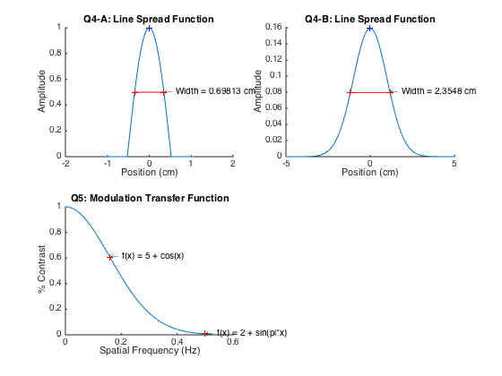

clc, clear all, close all
disp('Question 4')
alpha = 3;
x = linspace(-pi/3, pi/3, 1E6);
nonZeroRange = find(abs(alpha*x) <= pi/2);
LSF(nonZeroRange) = cos(alpha*x(nonZeroRange));
ZeroRange = find(abs(alpha*x) > pi/2);
LSF(ZeroRange) = 0;
figure
subplot(2, 2, 1), hold all, plot(x, LSF)
title('Q4-A: Line Spread Function')
xlabel('Position (cm)'), ylabel('Amplitude')
[SpatialResolution, events] = fwhm(x, LSF);
disp(['Spatial Resolution = ' num2str(SpatialResolution) ' cm'])
[~,centerIndex] = max(LSF);
plot(x(centerIndex), LSF(centerIndex), 'b+')
plot(x(events), LSF(events), 'r+')
plot([x(events(1)); x(events(2))], [LSF(events(1)); LSF(events(2))], 'r-');
str = ['\leftarrow Width = ' num2str(SpatialResolution) ' cm'];
text(x(events(2)), LSF(events(2)), str)
clear all
x = linspace(-5, 5, 1E6);
LSF =(1/(2*pi))*exp(-(x.^2)/2);
subplot(2, 2, 2), hold all, plot(x, LSF)
title('Q4-B: Line Spread Function')
xlabel('Position (cm)'), ylabel('Amplitude')
[SpatialResolution, events] = fwhm(x, LSF);
disp(['Spatial Resolution = ' num2str(SpatialResolution) ' cm'])
[~,centerIndex] = max(LSF);
plot(x(centerIndex), LSF(centerIndex), 'b+')
plot(x(events), LSF(events), 'r+')
plot([x(events(1)); x(events(2))], [LSF(events(1)); LSF(events(2))], 'r-');
str = ['\leftarrow Width = ' num2str(SpatialResolution) ' cm'];
text(x(events(2)), LSF(events(2)), str)
clear all
disp('Question 5')
u = linspace(0, pi/6, 1E6);
MTF = exp(-2*pi^2*u.^2);
subplot(2, 2, 3), hold all, plot(u, MTF)
title('Q5: Modulation Transfer Function')
xlabel('Spatial Frequency (Hz)'), ylabel('% Contrast')
fun{1} = 'f(x) = 2 + sin(pi*x)';
f(1) = 1/2;
fun{2} = 'f(x) = 5 + cos(x)';
f(2) = 1/(2*pi);
contrast = exp(-2*pi^2*f.^2);
plot(f, contrast, 'r+')
for (i = 1:2)
str = ['\leftarrow ' fun{i}];
text(f(i), contrast(i), str)
disp(['Contrast of Signal ' num2str(i) ' is = ' num2str(contrast(i)*100) '%'])
end
Question 4
Spatial Resolution = 0.69813 cm
Spatial Resolution = 2.3548 cm
Question 5
Contrast of Signal 1 is = 0.71919%
Contrast of Signal 2 is = 60.6531%
